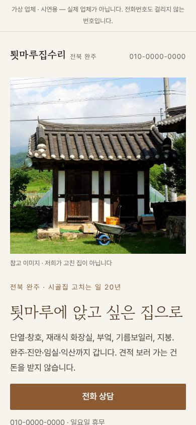
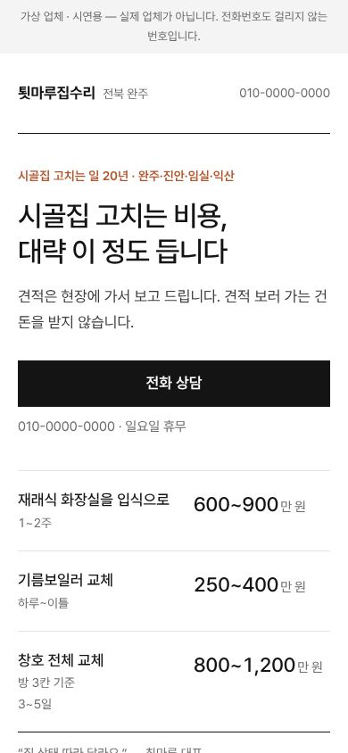
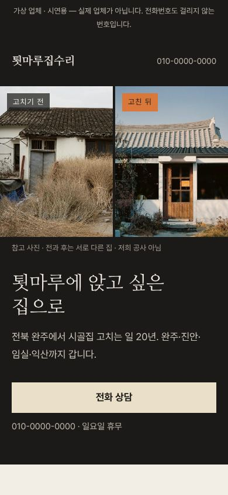

가상 업체 · 시연용. 휴대폰 첫 화면 그림을 누르면 견본이 열립니다. 하나 고르시면 그 견본에서 시안을 새로 만듭니다.

큰 집 사진 한 장 + 사장님 문구. 조용하고 따뜻함. 바로 아래 전·후 3쌍.

첫 화면에 대략 비용·기간 3줄. "얼마나 드나"에 먼저 답함. 사진은 아래 전·후 하나.

첫 화면이 곧 고치기 전·후. 어두운 바탕. 아래 "맡기기 전 네 가지".